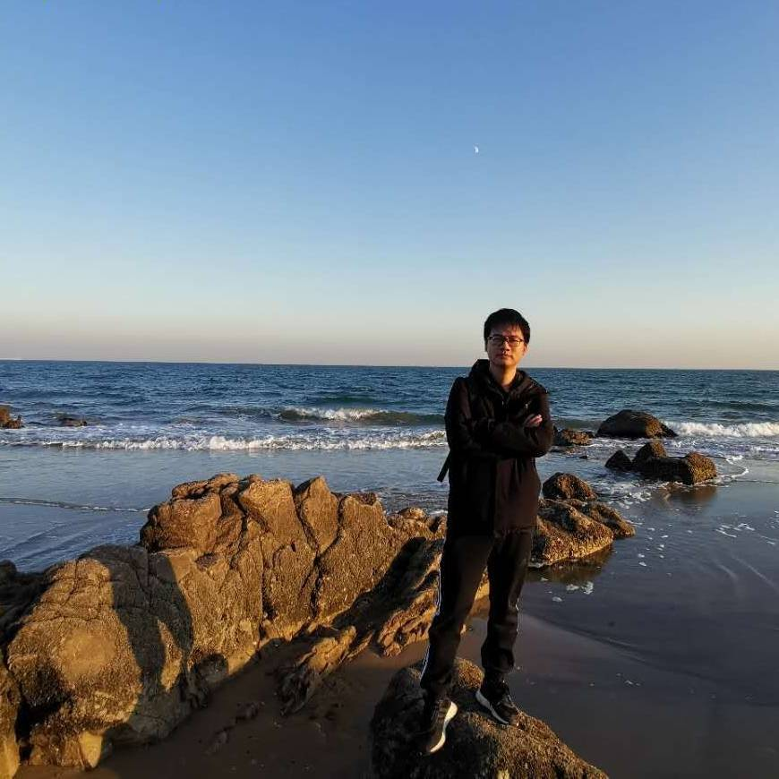

Pore-scale physics / Interface dynamics / Disordered porous structures
Pore-scale multiphase flow and interfacial physics in porous media
I study pore-scale multiphase flow and interfacial physics in disordered porous media. Using microfluidic experiments and direct visualization, I examine how wettability and geometry regulate fluid configurations and transport dynamics. My research aims to build mechanistic links between microscale interface behavior and macroscale flow responses in subsurface and engineered systems.
